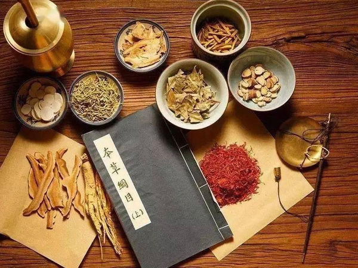

注册针灸师 · 注册中医师 — 徐子荃 Shirley Xu
High-quality personalized care combining traditional Chinese medicine with modern techniques — a truly holistic approach to your health and wellness.
欢迎光临弼正堂
We provide high-quality, personalized care that combines traditional Chinese medicine with modern techniques for a holistic approach to healing. We look forward to helping you on your wellness journey.
我们将传统中医与现代理疗技术相结合，为您提供高品质、个性化的整体健康调理，期待陪伴您的健康之旅。

各类团体保险 · ICBC · MSP 直接结算
We accept all types of group / extended health insurance, ICBC claims, and MSP — with convenient direct billing.
本诊所接受各类公司团体医疗保险、ICBC 车险理赔及 MSP，可直接结算，无需您垫付。
针灸保险客户专享
Acupuncture-insurance customers receive a complimentary massage or acupressure during their acupuncture treatment — traditional meridian massage or reflexology techniques.
For more details, please visit our clinic in person.
详情欢迎亲临诊所咨询。
R.TCM.P & R.Ac — 注册针灸师 & 注册中医师
Shirley Xu is a Registered Traditional Chinese Medicine Practitioner and Registered Acupuncturist with many years of clinical experience. She treats pain conditions, internal disorders, women's health concerns, and mental-health issues including depression, anxiety, and sleep disorders.
By combining acupuncture with Chinese herbal medicine, she addresses the underlying causes of illness and restores the body's natural balance. She maintains close working relationships with other medical professionals to give patients well-rounded care.
徐子荃医师是注册中医师及注册针灸师，拥有多年临床经验，擅长治疗各类痛症、内科疾病、妇科疾病，以及抑郁、焦虑、失眠等精神情志问题。
她将针灸与中药相结合，从根本上调理病因、恢复身体平衡，并与多位医疗专业人士保持合作，为患者提供全面的健康照护。
服务包括：针灸 · 穴位推拿 · 拔罐 · 耳针 · 中药 — 有病治病，无病强身，调和阴阳平衡。

Uses needles to promote healing and relieve pain.
Learn more →
Uses cups to improve blood flow and relieve muscle tension.
Learn more →
Attach ear seeds to acupoints to treat illnesses.
Learn more →
Uses natural herbs, minerals, and animal products to heal.
Learn more →Acupuncture is a clinical procedure of traditional Chinese medicine with 5000+ years of history. Qi ("chi") circulates through 12 meridians linked to the organs; injury, stress, or strong emotions can block this flow. Sterile needles placed at specific points re-establish the healthy flow of energy.
针灸是拥有五千多年历史的中医临床疗法。“气”沿十二经络运行，损伤、压力或情绪波动会阻滞气血运行，无菌针具刺激特定穴位可恢复气的正常运行。
请认准注册针灸师；本诊所使用一次性无菌针具（一人一针，用后即弃）；偶有轻微出血、瘀青或短暂酸麻；孕妇及凝血功能障碍者请先咨询医生。
穿宽松衣物；治疗前 1–2 小时少量进食（勿空腹、过饱或饮酒）；携带相关检查报告；提前 5–10 分钟到达；治疗期间请关闭手机。本诊所采用专业消毒措施。
Since 2017, BC residents with an annual net income under CAD $42,000 can apply for an MSP acupuncture subsidy of $230 per person per year. Contact the clinic for details, or apply online:
Apply on the BC government website →
2017 年起，年净收入低于 $42,000 的 BC 居民可申请 MSP 针灸补助，每人每年 $230。详情请咨询诊所，或点击上方链接在线申请。
Acupuncture is essentially painless. You may feel a slight tingling, tugging, or soreness on insertion that passes quickly. A heavy, sore, or tingling sensation during treatment ("deqi") is normal — most people feel deep comfort and relaxation afterward.
针灸基本无痛，进针时或有轻微酸麻胀感、转瞬即逝；治疗中的酸胀麻属正常“得气”反应，治疗后多感身心放松舒适。
针灸已用于治疗数千种病症数百年。根据世界卫生组织，以下病症可用针灸治疗：

加微信预约
Add WeChat to book